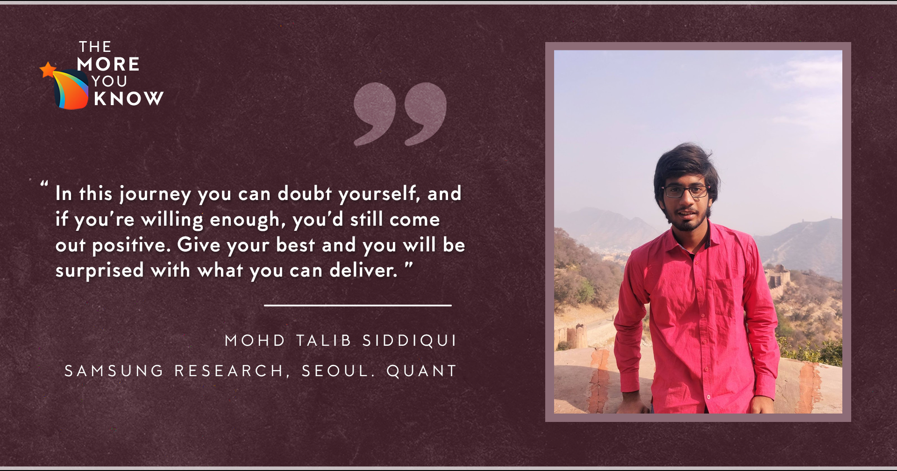

June 24, 2021
Hi there!
I am Mohd Talib Siddiqui, a Y18 student in the Computer Science and Engineering Department. In this
piece of text (I wouldn’t personally call it a blog), I will try to touch upon my experiences during the
first ever online internship drive. It’s a bit crazy when I think back about it, that despite being told
by almost everyone that I’ll be fine, I had no belief in me until I had my intern offer. All in all,
maybe some of you can relate and find this piece of text helpful.

My Profile
It’s not very easy to say which profile I was targeting. I was the kind of person who wasn’t much involved
in campus activities or one who used to explore a lot of fields to find interests. I was one who you would
call a ‘typical’ student, tackling the courses thrown at me and chilling the rest of the time. I had no
‘extra’ knowledge as people would call it, and I was fine with it. But as the intern drive came closer, I
recognized that I do not have any specific interests, neither was I clear on the most debated topic,
‘research vs industry’.
So, as anyone would do in this scenario, I filtered out what my best shots were, software and quant
profiles. And trust me, these decisions were not based on my interests, it was what I could do, in the
time I had, and things I had a background on. By the way, I tried to add Data Science to my target list by
doing online courses, but it was not the best use of my time, and I dropped it.
Therefore, I had the following to show on my resume:
- 10.0 CPI
- One UGP in Theoretical Computer Science
- CSE IITK Summer of Code project
Yes, I had three points to highlight on my resume when I first thought of starting to make one. All the
other points were pre IITK. At this point, the only thing I was sure of, that I’d not get filtered out
based on CPI. For the other things, it was grind time.
Preparation Period
I would say that the preparation timeline was not very clear to me. Since the semester had yet not
concluded in April, everything was on hold, it was not clear when the intern drive would be. I began my
preparations out of boredom in mid April, where I would surf around, solve a couple questions and that was
all for the day. Even though I started slow, I was consistent. I knew that my best shot was Software and
Quant, and that exploring new fields would not be as easy as it would have been had I been on campus, I
went all in into it.
I started off with codeforces (definitely not the right start), trusting myself that I have general
problem-solving abilities keeping aside the coding the solutions part. I did not know C++, never used it
before (yes, I did my ESO207 assignments in C). Very quickly I knew that problems on codeforces would help
my thinking in terms of algorithms, but they would sure not help me code what I think, being an absolute
beginner at C++. And as I always have been doing, I gathered a bunch of my friends, and we were off to a
start.
Me and four-five of my friends, used to solve LeetCode medium questions from the start. This was the time
that all of us were learning C++, and never did a problem outside of ESO207. To be quite honest, if you
have a great theoretical understanding of basics of DSA, it does not take much to pick up on the practical
usage of them. A daily 6-7 problem grind on a Skype call started for all of us, and we made some real
progress. When I was comfortable with C++, and some general questions, I moved to Codechef and Codeforces.
I didn’t do much again, since there were no dates for intern drive, but I made sure to never miss a
contest.
Then comes the final 0.5-1 month before the Day 1. It was the time when you are expected to know standard
DP/String etc questions that are generally asked in interviews. You are expected to know most of the
standard stuff on sites like InterviewBit, GfG and LeetCode, everybody knows what to read/solve from these
sites. My personal preference was codeforces indeed since it was a brain exercise for me. By this time, I
figured out that my weak point was DP, and so I went old school on that topic, daily practice from
LeetCode towards the end.
Amidst all this, I didn’t forget quant. I was doing some quant here and there always. Quant preparation is
not something special, agreed that it helps to practice a lot. But I chose to do quant as a fun thing to
prepare, because who doesn’t love some brain-teasers a day. Involve probability concepts in it, its more
fun. I would not go much into the sources, since everyone has the same list, Brainstellar, 50 challenging
problems in probability, Gurmeet’s Blogs etcetera etcetera. But my personal experiences say that preparing
SDE is a lot harder.
Getting close to the final day, it all starts coming into the picture, resume verification is a bit of a
headache in itself. Then closer to the date, opening start popping up on the portal, tests are scheduled,
and that’s when you know, that it’s time to put use of the work you’ve been putting in. Towards the end,
you’re already warmed up with so many tests that you don’t have to worry about your brain’s warmup before
the final day of the interview. I will not say that relax during the tests and all, because believe me,
that’s the last thing you will relax on. I will only say to not give up under pressure.
Day 1 Interviews
In this part I’ll try to put into words my day 1 interview experiences and probably try to explain my
thought process during those.
The first interview I was called for was Google (these actually happened 4 days before day 1). There were
two rounds, purely technical. Obviously, the first round was easier. There were many things I learnt from
those interviews. Thinking out loud is a good thing, do not be afraid to start with the most trivial of
the approaches. I would advise you to work with the interviewer and keep him together with your thought
process. One thing really stood out in the Google interview was that the interviewer was really interested
in my conceptual strength. The first interview was very clear-cut graph questions. The second interview
was more focused on abstract concepts like ‘iteration vs recursion’ and various problems related to it.
However, the second interview experience differed from other 6-7 people I discussed. Everyone other than
me had straight coding questions.
On day 1, my first two interviews were 2 rounds at Tower Research. This was my first and only quant
interview experience. I did have a good amount of practice, but again it was proved that no amount of
practice is really enough. In my both rounds, I did not find a question that I had already seen before. It
was a good experience, and again I worked my way into the solutions with communicating my thought process
to the interviewer.
Next two interviews were from Samsung Electronics, South Korea. One technical and one HR interview. It was
also, nothing really knew, the only problem you’ll face is probably the accent. So, any of you giving
these interviews, I’d advise you to be loud, slow and use simple vocabulary.
The last two interviews of mine were from Rubrik, again coding interviews. The only difference was that
Google and Samsung did not execute the code. Rubrik used a platform where you write code on a shared
platform and you had to execute it. That was the only significant difference.
Due to time constraints, I wasn’t able to appear for Rubrik Round 3, Quadeye, DE Shaw and GS interviews.
Despite being shortlisted for many companies on day 1, when the shortlists start to release 3-4 days
before, do not get too disappointed. There is no hard and fast shortlist criteria most of the times, you
won’t find a pattern in those lists. But it is very hard to not get demotivated when you don’t see your
name in them. I was too, at the start, when I wasn’t shortlisted in some companies despite being able to
score full in tests. Eventually it worked out for me that I had many, but yes, things like this happen,
when you score full and yet not get called for the interviews.
I also see some rumors that if you don’t have at least 2000 rating on various competitive programming
platforms, companies like Google, Tower Research etc. do not shortlist you for interviews. This is
completely false. Both companies did shortlist people outside this, and Tower interns did not have high
ratings on online programming platforms.
Conclusion
In the end, I would say it was one unique experience I’ve had so far. The one thing I’ve definitely
taken away from this journey is that you can doubt yourself, and if you’re willing enough, you’d still
come out positive. Prepare yourself to give your best and you will be surprised with what you can
deliver.
For people who know what excites them, do not settle for less, you’re lucky to have clarity in that
regard. For people who don’t, it’s okay to be so, you will figure it out.
If you’ve come this far, thank you for reading, it was long. For people who think I can help them out,
do not hesitate to contact me. Thanks and All the Best!
- Mohd Talib Siddiqui